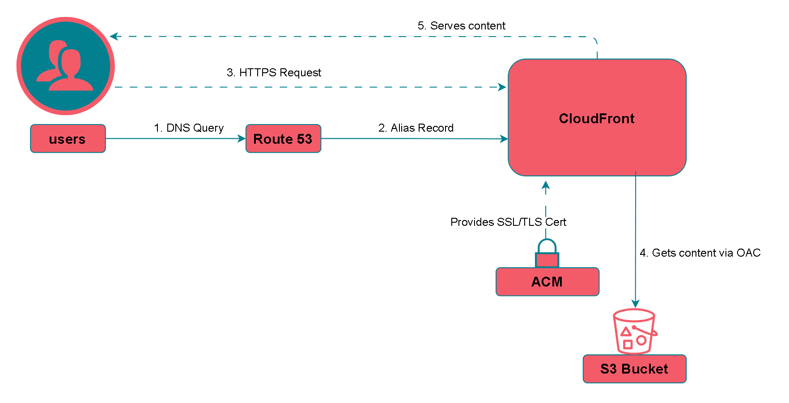

Cloud-Native Portfolio
Project Philosophy & Goal
The primary objective of this project was to architect, build, and deploy a secure, scalable, and fully automated serverless web application on AWS. This project serves as a tangible demonstration of core cloud engineering and DevOps principles, from foundational security setup and infrastructure provisioning with Terraform to implementing a complete CI/CD pipeline for automated deployments.
Solution Architecture
The application is a full-stack serverless solution. The frontend is a static website delivered globally via a CDN, which communicates with a serverless backend API to power dynamic features like the unique visitor counter.
Frontend Architecture
The delivery layer, responsible for getting the website to the user quickly and securely.
Backend Architecture
The application logic layer, responsible for processing data and managing state.

Technical Deep Dive
Part 1: The Frontend (The Delivery Layer)
The frontend infrastructure is designed for high performance, security, and low cost by offloading all traffic to the AWS global edge network.
- Amazon S3: The static website content (HTML, CSS, JavaScript, images) is stored in an S3 bucket. The bucket is configured to be completely private, with all public access blocked. This is a critical security measure to ensure the integrity of the site content.
- Amazon CloudFront: A global Content Delivery Network (CDN) serves as the public entry point. It fetches content from the private S3 bucket and caches it at edge locations worldwide. This provides low-latency delivery to users and shields the origin from direct traffic. All HTTP requests are automatically redirected to HTTPS.
- Origin Access Control (OAC): A secure handshake between CloudFront and S3 is established using OAC. The S3 bucket policy is configured to only allow access from my specific CloudFront distribution's ARN. This is the modern best practice, ensuring that users cannot bypass the CDN to access the bucket content directly.
- AWS Certificate Manager (ACM): A free, auto-renewing SSL/TLS certificate is provisioned in the mandatory `us-east-1` region. This certificate is attached to the CloudFront distribution to enable HTTPS, ensuring all traffic between the user and the CDN is encrypted.
- Amazon Route 53: The DNS for the custom domain (`aravindakrishnan.click`) is managed by Route 53. Special Alias records are used to point the root domain and the `www` subdomain to the CloudFront distribution, which is more reliable than traditional CNAME records.
Part 2: The Backend API (The Application Logic)
The backend is not just a simple hit counter; it's a robust, privacy-conscious system that correctly distinguishes between page hits and unique visitors. This design showcases a deeper understanding of serverless patterns and data handling.
- AWS Lambda: A serverless function written in Python serves as the core of the backend logic. To protect visitor privacy, incoming IP addresses are first pseudonymized using a salted hash (HMAC-SHA256) before being processed. The secret for the hash is securely managed as a Lambda environment variable, separating configuration from code.
- Amazon DynamoDB: A serverless NoSQL database provides scalable, low-latency persistence with on-demand billing. A single-table design is used to efficiently store both the aggregate visitor count (in one item) and the unique hashes of previously seen visitors (in separate items). This design allows for a fast and cost-effective `GetItem` check to determine if a visitor is new before incrementing the count. The `UpdateItem` operation is used for its atomicity, which prevents race conditions during concurrent requests.
- Amazon API Gateway: A secure REST API provides the public HTTP endpoint for the frontend. A Lambda Proxy Integration is used to pass the entire request details, including the source IP, to the backend function. CORS is meticulously configured with a MOCK integration for the `OPTIONS` method to handle browser preflight requests, ensuring secure cross-origin communication.
Part 3: The Automation Layer (Infrastructure as Code)
The entire project—both frontend and backend—is defined declaratively using Terraform. This approach eliminates manual configuration, ensures consistency across environments, and allows the entire infrastructure to be version-controlled in Git.
- Terraform: The project is organized into two distinct Terraform projects: `frontend` and `backend`. This separation of concerns makes the infrastructure easier to manage and update independently.
- Key Challenges & Learnings: The automation process revealed several real-world challenges. For instance, a circular dependency was resolved by using a more flexible IAM policy ARN for CloudWatch logs. A critical `InvalidBucketAclWithObjectOwnership` error was debugged by removing the legacy `aws_s3_bucket_acl` resource in favor of a modern, policy-based approach, demonstrating a deep understanding of S3 security evolution.
Part 4: The Deployment Engine (CI/CD Pipeline - In Progress)
The final phase of the project is to build a complete CI/CD pipeline using GitHub Actions. This will fully automate the testing and deployment of both the frontend and backend repositories.
- Backend Pipeline: The workflow will automatically run Python unit tests. On success, it will use a secure OIDC connection to authenticate with AWS and run `terraform apply` to deploy the backend.
- Frontend Pipeline: The workflow will first run `terraform apply` to ensure the infrastructure is in place. It will then use the AWS CLI to run `s3 sync` to upload the latest website files. The final, critical step will be to create a `cloudfront create-invalidation` to purge the CDN cache, ensuring users see the latest content immediately.